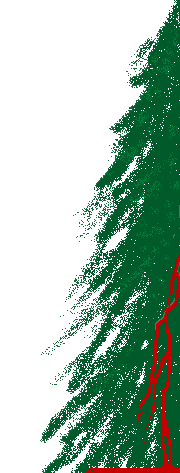

 isn't it strange, this place has no shelter
no god here in this forest hushed quiet.
all trees tall, almost wordless, separate
hesitant breeze whispers glories promised
leaves shake threat with ancient practiced routine
shadow boxing distant foes imagined.
fine wind flows around softened gravestones
warm air speech cleansing gruesome histories.
storm sky darkens with false god trust vapor
battle blessed with death strength religious.
blood lust conflict, ghostly human drama
sanguine rivers wash in a red mist future.
equalized dust, the old man sighed sadly
cursing bayonet-murder aggression
patriotic child sought honor final
a prideful pine box brought hollow cargo.
siren song with a foreign vibrato
thinned this woodlot of strong trees listening.
leaf matted sleep, butchered body stasis
sexy voices breathe hymns mysterious.
barren solice for a broken father
living past thoughts, climbing the old path worn
tripping up on fallen lumber decay
discarded birth, warfare machinery.
earth-bed solid, loving moist dirt mother
accept these gifts, conquered offspring humbled.
soil depressions will feed rising saplings
sinister choirs sing lullabies, waiting.
Copyright © 1995, Daniel R. Greening. All rights
reserved.
dan@greening.name